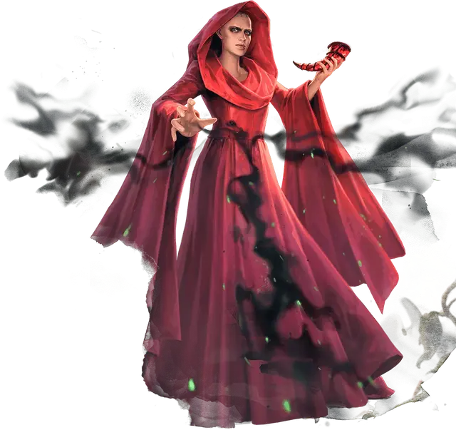

Софина
Sofina
Средний Гуманоид (Волшебник), нейтрально-злой, именной НИП

Класс Доспеха 14 (магическая мантия; 17 с доспехами мага)
Хиты 161 (19к8 + 76)
Скорость 30 футов
| мод | спас | ||
|---|---|---|---|
| СИЛ | 12 | +1 | +2 |
| ЛОВ | 14 | +2 | +3 |
| ТЕЛ | 18 | +4 | +5 |
| мод | спас | ||
|---|---|---|---|
| ИНТ | 20 | +5 | +11 |
| МДР | 14 | +2 | +8 |
| ХАР | 8 | −1 | +0 |
Навыки История +10, Магия +10, Проницательность +7
Сопротивление урону некротическая энергия
Чувства пассивное Восприятие 12
Языки Общий, Бездны, Драконий, Инфернальный, Тэйский
Опасность 15 (13000 опыта)
Бонус мастерства +5
Особенности
Особое снаряжение. Софина носит магическую робу, которая дает ей бонус +2 к КД и бонус +1 ко всем спасброскам (уже включено в блок статистики).
Действия
Мультиатака. Софина совершает три атаки Некротическим ударом.
Некротический удар. Рукопашная или дальнобойная атака заклинанием: +10 к попаданию, досягаемость 5 футов или дистанция 120 футов, одна цель. Попадание: 32 (5к10+5) урона некротической энергией.
Использование заклинаний. Софина накладывает одно из следующий заклинаний, используя Интеллект в качестве заклинательной характеристики (Сл спасброска от заклинания 18):
• Неограниченно: волшебная рука [mage hand], сообщение [message], фокусы [prestidigitation]
• 2/день каждое: волна грома [thunderwave], длань Бигби [bigby's hand], доспехи мага [mage armor], Отилюков упругий шар [otiluke’s resilient sphere], переносящая дверь [dimension door], проклятие [bestow curse]
• 1/день каждое: остановка времени [time stop], перст смерти [finger of death], Эвардовы чёрные щупальца [evard's black tentacles]
Метеоритный дождь (1/день). Софина волшебным образом вызывает метеоритный дождь, взрывающийся четырьмя сферами с радиусом 40 футов, центр каждой из которых находится в точке, которую она может видеть в пределах 1 мили от себя. Эти сферы могут перекрываться. Каждое существо в одной или нескольких из этих сфер должно совершить спасбросок Ловкости Сл 18, получая 35 (10к6) урона огнём и 35 (10к6) дробящего урона при провале или половину этого урона при успехе. Существо, находящееся в нескольких сферах, получает этот урон только один раз.
Бонусные действия
Призыв призрака (1/день). Софина волшебным образом вызывает дух Тэйского убийцы, который появляется в виде призрака [wraith]. Призванный призрак [wraith] появляется в незанятом пространстве в пределах 60 футов от Софины, которой он подчиняется. Призванный призрак [wraith] ходит сразу после Софины. Он существует 1 час, пока он или Софина не умрет, или пока Софина не отзовёт его бонусным действием, в зависимости от того, что случится раньше.
Описание
Софина — Красный Волшебник Тэя, элитный практик магии, связанный с тиранической Тэйской магократией. Софина специализируется на некромантии, магия смерти и страх — инструменты в её арсенале.
Поскольку Красных Волшебников сторонятся за пределами Тэя, Софина скрывает своё происхождение и холодно отказывает всем, кто ищет её дружбы. Хитрый манипулятор, она терпеливо двигает фигуры в нужные места, и теперь её грандиозные замыслы начинают обретать форму.